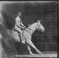

Sombras Musicales
Galopando

Componentes
- Luis María Ruiz - Bajo
- Sancho López - Batería
- Pedro Pérez - Bajo
- Antonio Aguirre - Guitarra
- Laura Garrido - Cantante
Nuestro grupo Sombras Musicales se creó en 2011 compuesto por una cuadrilla de amigos que se reunían a hacer lo que más les gustaba. Nuestro primer trabajo tuvo mucho éxito y fue muy bien acogido, esperamos que este segundo trabajo, Galopando, tenga por lo menos la misma aceptación que el anterior. Lo hemos hecho con todo nuestro cariño y con un poco más de experiencia que el anterior, aprendiendo de los errores cometidos en el camino Esperamos que os guste!!.
Enciclopedia de Front-End
Calle Cantones 9. 31243 Arróniz. Tel. 948 22 65 36. info@enciclopediafrontend.orgActividad realizada por Patricia López Lecumberri, para la asignatura Herramientas HTML y CSS. Primer semestre del curso 2021-2022